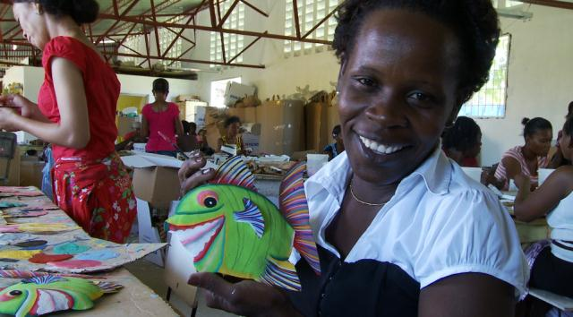

Haiti: Making a Living from Creativity / La creatividad como un medio de vida
By
Georg Neumann

By Silvia Dangold Versión en español
Is it possible to make a living from creativity? According to renowned designer Donna Karan, it is. In fact, as she says, Haiti is one of the most creative countries she has ever visited. However, for a country to succeed, it is critical to generate opportunities for creativity that will translate into positive economic and financial results. This has been one of Karan’s objectives in Haiti, where she has invested time and money on a project whose purpose is to provide both design guidance and access to higher value markets to artisans in Port-au-Prince, Leogane and Jacmel.
The Multilateral Investment Fund (MIF) has long supported projects in Latin America and the Caribbean that link small artisans with export markets. In partnership with other donors, notably the Clinton Foundation and Karan’s Urban Zen Foundation, the MIF is now seeking to strengthen Haitian artisans’ entrepreneurial skills and develop their businesses by facilitating their links to markets for in-demand products.
The purpose of the project is to reduce and optimize production costs, facilitate the acquisition of raw materials for craft production, and improve the artisans’ working conditions. The project also seeks to create an intermediary business network that will be responsible for building an effective, efficient, dynamic and sustainable market.
In this effort, Karan serves as a sort of "project curator," and Haitian artisans are the creators. So said the designer during her presentation in a recent stakeholders meeting at the Inter-American Development Bank (IDB), led by the Bank’s executive vice president, Julie T. Katzman, and the MIF General Manager, Nancy Lee.
The purpose of the meeting was to analyze a value chain approach to the craft sector in Haiti. An analysis commissioned by the MIF estimates that tens of thousands of artisans could benefit from this project.
The designer was also in Washington, D.C., for a June 13 reception at the IDB Cultural Center, celebrating the opening of the "Discover Haiti" exhibition. Part of the Karan project, this exhibition displays a beautiful line of stunning home decorations and fashion accessories produced by Haitian artisans. The event was attended by Haitian Prime Minister Laurent Lamothe, former U.S. President Bill Clinton, actor Sean Penn, and IDB President Luis Alberto Moreno.
This exhibition, originally held at the Urban Zen Center of New York, may be seen at the IDB Cultural Center through June 27, and will later move on to London to be presented during the Olympic Games.
The exhibition represents an opportunity to show the world a different side of Haiti, a country with enormous potential and creative people, full of artistic abilities, with high hopes to develop and deliver their talent to the country. Since its founding, the MIF has sought to improve the quality of life of the people of the region by implementing innovative business models, and therefore has the commitment to help these artisans in Haiti turn their artistic activity into sustainable, responsible and solid livelihoods.
***
¿Es posible hacer de la creatividad un medio de vida? Según la reconocida diseñadora Donna Karan, esto sí es posible. De hecho, en sus palabras, Haití es uno de los países como mayor capacidad creativa que ella ha visitado. Sin embargo, para que un país salga adelante, es importante generar oportunidades para que esta capacidad creativa se traduzca en resultados económicos y financieros. Ese ha sido uno de los objetivos de Karan en Haití, en donde ha invertido tiempo y dinero en un proyecto cuyo fin ha sido ofrecer asesoría en diseño y acceso a un segmento de mercado más alto a artesanos en Puerto Príncipe, Léogâne y Jacmel.
El Fondo Multilateral de Inversiones (FOMIN) ha venido apoyando este tipo de proyectos en América Latina y el Caribe a través de la vinculación de pequeños artesanos con mercados de exportación. En alianza con otros donantes, en especial con la Fundación Clinton y Urban Zen, la fundación de Karan, el FOMIN busca fortalecer las capacidades empresariales y desarrollar más negocios de servicios complementarios que faciliten la vinculación de los artesanos haitianos con los mercados que demandan sus productos.
La idea del proyecto es lograr reducir y optimizar los costos de producción, facilitar la adquisición de materiales para la producción de artesanías, y mejorar los talleres de producción y las condiciones laborales de los artesanos. Asimismo, el proyecto busca generar un tejido empresarial responsable que sea un intermediario efectivo y eficiente con el fin de darle sostenibilidad a las dinámicas de este mercado.
En este esfuerzo, Karan funge como una suerte de “curadora del proyecto”, en donde los artesanos de Haití son los creadores. Así lo presentó la diseñadora en una reunión con el equipo del Banco Interamericano de Desarrollo (BID) liderado por su vicepresidente ejecutiva, Julie T. Katzman, y la gerente general del FOMIN, Nancy Lee.
El objetivo de la reunión fue analizar un enfoque de cadena de valor para el sector artesanal en Haití. Según el análisis encargado por el FOMIN, decenas de miles de artesanos podrían beneficiarse de este proyecto.
La diseñadora también vino a Washington, D.C., para la recepción realizada el pasado 13 de junio en el Centro Cultural del BID, celebrando el lanzamiento al público de la exhibición “Descubre Haití”. Parte del proyecto de Karan, esta exhibición está compuesta por una hermosa línea de impactantes artículos de decoración y accesorios de moda producidos por artesanos haitianos. El evento contó con la presencia del primer ministro haitiano, Laurent Lamothe, el ex presidente Bill Clinton, el actor Sean Penn, y el Presidente del BID, Luis Alberto Moreno.
Esta muestra, originalmente realizada en el Centro Urban Zen de Nueva York, podrá ser vista en el Centro Cultural del BID hasta el 27 de junio, para después trasladarse a Londres para ser presentada durante los Juegos Olímpicos.
La exhibición representa una oportunidad para mostrar al mundo una cara diferente de Haití, un país con enormes posibilidades y con gente creativa, llena de capacidades artísticas, con grandes esperanzas de desarrollarse y entregar su talento al servicio del país. Desde su creación, el FOMIN ha buscado mejorar la calidad de vida de los pueblos de la región mediante la implementación de modelos económicos innovadores, y por tanto tiene la tarea y el compromiso de de ayudar a convertir la actividad artística de estos artesanos haitianos en un medio de vida sostenible, responsable y sólido.